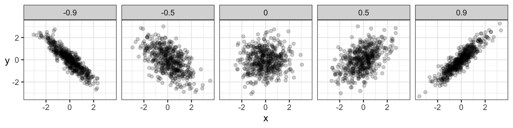
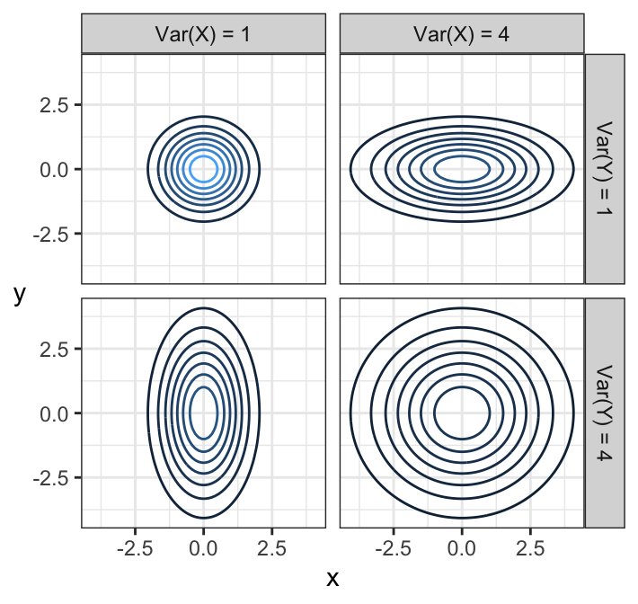
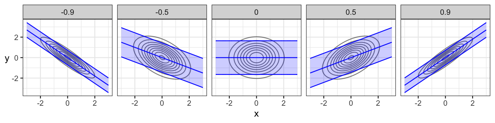
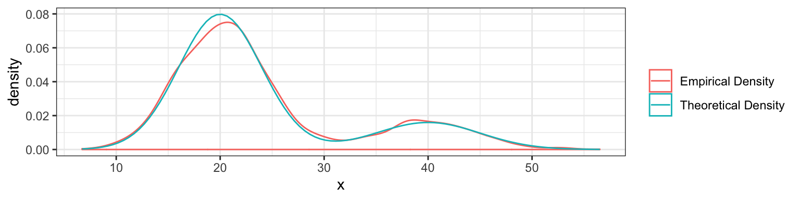
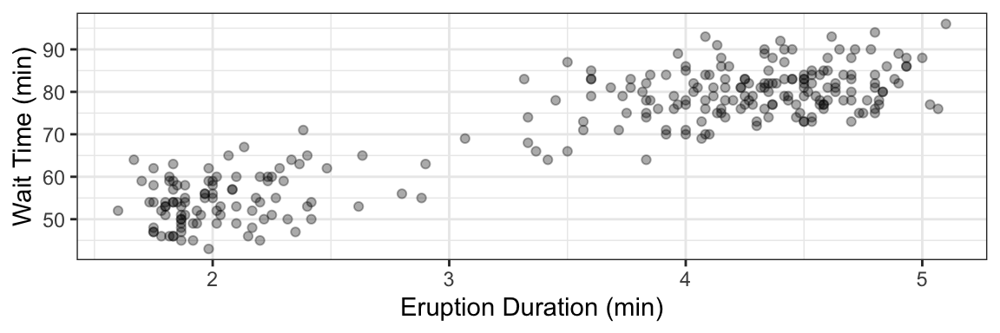
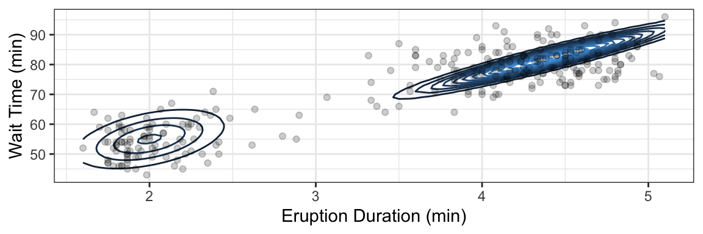
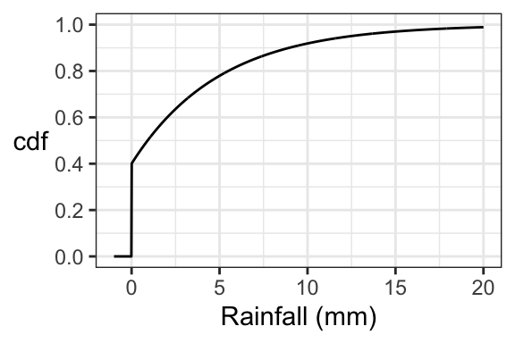
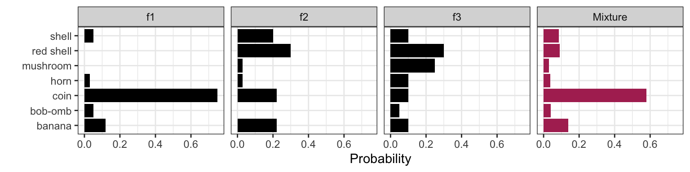
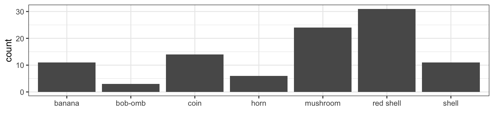

Lecture 8 Noteworthy Distribution Families
8.1 Learning Objectives
From today’s class, students are expected to be able to:
- Identify the parameterization of the multivariate Gaussian/Normal family.
- Describe the joint density of a bivariate Gaussian distribution in terms of its contours.
- Identify whether a bivariate Gaussian distribution has dependence or independence.
- Compute marginal and conditional distributions from a bivariate Gaussian distribution, and compute the distribution of a linear combination of jointly Gaussian random variables.
- Calculate the density or cdf of a mixture distribution, given the class probabilities and class distributions.
8.2 More Univariate Distribution Families (5 min)
I added the following univariate distribution families to Lecture 6. It just fit better there, along with the other families listed there. Let’s take a look at them. They are:
8.3 Multivariate Gaussian/Normal Family (20 min)
We’ve already seen the Gaussian/Normal family of univariate distributions. There’s also a multivariate family of Gaussian distributions. Members of this family need to have all Gaussian marginals, and their dependence has to be “Gaussian dependence”.
If you’re interested, “Gaussian dependence” is obtained as a consequence of requiring that any linear combination of Gaussian random variables is also Gaussian.
8.3.1 Parameters
To characterize the bivariate Gaussian family, we need the following parameters:
- the parameters of the two marginals (mean and variance for both \(X\) and \(Y\), sometimes denoted \(\mu_X, \mu_Y, \sigma^2_X, \sigma^2_Y\)), and
- the covariance between \(X\) and \(Y\), sometimes denoted \(\sigma_{XY}\) (or, equivalently, the pearson correlation, sometimes denoted \(\rho\)).
That’s five parameters altogether, and only one of them (Pearson correlation or covariance) is needed to specify the dependence part.
Using the parameters of a bivariate Gaussian distribution, we can construct two objects that are useful for computations: a mean vector \(\boldsymbol{\mu}\) and a covariance matrix \(\Sigma\), where \[\boldsymbol{\mu}=\begin{pmatrix} \mu_X \\ \mu_Y \end{pmatrix},\] and \[\Sigma = \begin{pmatrix} \sigma_X^2 & \sigma_{XY} \\ \sigma_{XY} & \sigma_Y^2 \end{pmatrix}.\] Even though \(\sigma_{XY}\) is repeated in the upper-right and lower-left corner of \(\Sigma\), constructing the matrix in this way makes for much easier computations down the road.
Note that the covariance matrix is always defined as above. Even if we’re given the correlation \(\rho\) instead of the covariance \(\sigma_{XY}\), we would then need to calculate the covariance (as \(\sigma_{XY} = \rho \sigma_X \sigma_Y\)) before constructing the covariance matrix. However, there is another matrix that is sometimes useful, called the correlation matrix, and it’s defined as \[\text{Correlation Matrix} = \begin{pmatrix} 1 & \rho \\ \rho & 1 \end{pmatrix}.\]
This “linear algebra” format of the parameters also makes it easier to generalize to more than two variables. In general, the multivariate Gaussian distribution made up of \(d\) variables has some generic \(d\)-dimensional mean vector, and a \(d \times d\) covariance matrix, where the upper-right triangle and lower-right triangle of the covariance matrix are the same. This means that, to fully specify this \(d\)-dimensional distribution, we need:
- the means and variances of all \(d\) random variables, and
- the covariance or correlations between each pair of random variables (that’s \(d \choose 2\) of them).
If you’re interested, it turns out any square matrix is a valid covariance matrix, so long as it’s positive definite. This takes care of the fact that the individual variances can’t be negative and \(-1\leq\rho\leq1\), or put another (more confusing) way, \(| Cov(X,Y) | \leq \sqrt{Var(X)Var(Y)}\). If you’d like a brief review of linear algebra, check out the Appendix.
Here’s an example of a covariance matrix with \(d=3\) (“trivariate”), and random variables \(X, Y, Z\):
\[\Sigma=\begin{pmatrix} \sigma_X^2 & \sigma_{XY} & \sigma_{XZ} \\ \sigma_{XY} & \sigma_Y^2 & \sigma_{YZ}\\ \sigma_{XZ} & \sigma_{YZ} & \sigma_Z^2 \end{pmatrix}\]
There are overall 9 parameters needed to characterize the trivariate Gaussian family: 6 for the marginals (mean and variance per marginal), and 3 dependence parameters (all pairwise correlations).
8.3.2 Visualizing Bivariate Gaussian Density
The joint density of multivariate Gaussian distributions have a characteristic “elliptical” shape to them. Here are some examples with \(N(0,1)\) marginals, with different Pearson correlation amounts indicated in the bars:

And here are samples of data coming from these distributions:

Indeed, for Gaussians specifically, uncorrelated implies \(X\) and \(Y\) are independent. But, remember, uncorrelated often does not imply independence.
Let’s take a look at uncorrelated densities, but with different variances, and means of 0:

Notice that elliptical contours stretched either vertically or horizontally still have no dependence! None of these do. The stretch needs to be on some diagonal in order for there to be dependence – that is, pointing in some direction other than along the x-axis or y-axis. Circular contours are both independent and each marginal has the same variance.
Note: you’ll notice the mean vector isn’t very interesting, it just shifts things around. The interesting stuff lives in \(\Sigma\).
Optional note: you’ll notice the contours are ellipses (ellipsoids in higher dimensions). You may recall from linear algebra class that a matrix (specifically its eigenvalues) can be thought to represent an ellipse/ellipsoid. This is the covariance matrix here – not a coincidence.
8.3.3 Properties
This distribution has many amazing properties.
- Marginal distributions are Gaussian.
The marginal distribution of a subset of variables can be obtained by just taking the relevant subset of means, and the relevant subset of the covariance matrix.
- Linear combinations are Gaussian.
This is actually by definition. If \((X, Y)\) have a bivariate Gaussian distribution, then \(aX + bY + c\) for constants \(a, b, c\) is Gaussian. Want to find the mean and variance? Just apply the linearity of expectations and variance rules we saw earlier: \[E(aX + bY + c) = a \mu_X + b \mu_Y + c,\] and \[\text{Var}(aX + bY + c) = a^2 \sigma_X^2 + b^2 \sigma_Y^2 + 2ab\sigma_{XY}.\] The same rules apply with more than two Gaussian random variables.
- Conditional distributions are Gaussian.
If \((X, Y)\) have a bivariate Gaussian distribution, then the distribution of \(Y\) given that \(X = x\) is also Gaussian. Its distribution is \[Y\mid X = x \sim N \left(\mu_Y + \frac{\sigma_Y}{\sigma_X}\rho (x - \mu_x),\ (1 - \rho^2)\sigma_Y^2 \right)\] Take a moment to notice what’s going on here:
- The conditional mean is linear in \(x\), passes through the mean \((\mu_X, \mu_Y)\), and has a steeper slope with higher correlation.
- The conditional variance is smaller than the marginal variance, and gets smaller with higher correlation.
Here are the conditional means (“regression line”) and 90% prediction intervals for the previous plots of bivariate Gaussians with different correlations. Note that the regression line does not actually pass through the ellipse from “tip to tip”, except in the independent case!

If you want to know the formula for conditional distributions in the general multivariate case, you can find this pretty easily online (c.f. Wikipedia). It involves matrix algebra with the covariance matrix and mean vector.
8.3.4 Activity
Consider the multivariate Gaussian distribution of random variables \(X\), \(Y\), and \(Z\) with (respective) mean vector \[\boldsymbol{\mu} = \begin{pmatrix} 0 \\ 2 \\ 3 \end{pmatrix},\] correlation matrix \[\begin{pmatrix} 1 & 0.2 & 0.1 \\ 0.2 & 1 & 0.2 \\ 0.1 & 0.2 & 1 \end{pmatrix},\] and marginal variances of 1.
- What’s the distribution of \(X\)?
- What’s the joint distribution of \(X\) and \(Z\)?
- What’s the distribution of \(Y\), given that \(X = 0.5\)?
- What’s the distribution of \(Y - 3X\)?
- What’s \(P(Y < 3X)\)?
8.4 Break and Evaluations (8 min)
We’ll take a bit of a longer break so that you can fill in instructor evaluations. Please fill them out online (you should have received an email).
8.5 Mixture distributions (20 min)
In Lecture 3 (Simulations), we used simulation to find the distribution of a random variable that involves multiple steps. We saw at least two examples of this:
- The total gang demand on a given day for ships arriving at port:
- Generate the number of ships arriving at port on a given day.
- For each ship, generate a gang demand.
- From your lab, the total number of cupcakes you’ll need at a party:
- Generate attendance to a party from a guestlist.
- For each person attending, generate the number of cupcakes eaten.
There’s an important type of multiple-step distribution called a mixture distribution, that shows up in many applications. In general, a mixture distribution results if an outcome is generated as follows:
- Generate a “membership” into one of \(k\) possible classes \(A_1, \ldots, A_k\), each having probabilities \(p_1, \ldots, p_k\).
- Each class has its own distribution; generate an observation from the corresponding distribution.
If the individual distributions in Step 2 have pdf’s/pmf’s \(f_1, \ldots, f_k\), then it turns out the pdf/pmf \(f_{\text{Mixture}}\) of an outcome generated by these two steps can be calculated by \[f_{\text{Mixture}}(x) = p_1 f_1(x) + \cdots + p_k f_k(x).\] This is true whether or not the pdf’s/pmf’s are univariate or multivariate! We also have a similar result for cdf’s. If \(F_1, \ldots, F_k\) are the cdf’s corresponding to \(f_1, \ldots, f_k\), then the cdf of the mixture distribution can be calculated by \[F_{\text{Mixture}}(x) = p_1 F_1(x) + \cdots + p_k F_k(x).\]
As usual, this formula isn’t a “new rule” in probability – in fact, we can derive the above formula using the law of total probability. But, we won’t require that for this course.
8.5.1 Example: Mixture of Gaussians
A common example of a mixture distribution is a mixture of Gaussians, where each of the distribution classes \(f_1, \ldots, f_k\) are Gaussian distributions (whether univariate or multivariate).
Univariate Example: Normally, the time it takes you to commute to work (in minutes) follows a \(N(20, 16)\) distribution. But, there’s a whopping 20% chance that there’ll be a collision along the way that will slow you down, in which case it will take you \(N(40, 25)\) minutes to get to work. What’s the distribution?
Here’s a function to do the simulation, and some sample commute times:
## [1] 36.56652 33.33859 28.53662 22.88209 13.04609 24.66753 20.66765
## [8] 18.61433 20.92518 21.87665Here’s the density function:
Sanity check: let’s see that the theoretical density matches the empirical density (after generating 2000 points):

8.5.2 Application: Clustering
Consider the faithful data set that comes with the datasets package in R.

There appears to be two categories of eruptions here. Can we group these into clusters? This is one topic of unsupervised learning (DSCI 563) – one idea is to fit a Gaussian mixture, such as the one depicted below underneath the data.

8.5.3 Application: Zero-Inflated Models
Consider the following (made up) data of total rainfall for each day in September:
| Sun | Mon | Tue | Wed | Thu | Fri | Sat |
|---|---|---|---|---|---|---|
| 0.0 | 0.0 | 0.0 | 1.7 | 0 | 11.8 | 3.2 |
| 1.5 | 2.8 | 0.0 | 0.0 | 0 | 19.8 | 0.0 |
| 5.0 | 0.0 | 0.2 | 1.6 | 0 | 1.0 | 5.1 |
| 0.0 | 3.6 | 0.0 | 0.0 | 0 | 0.0 | 0.0 |
| 6.3 | 0.0 | NA | NA | NA | NA | NA |
This isn’t quite continuous data, because 0 mm of rain is possible. Yet, the data aren’t discrete, because there are uncountably many outcomes in the case that it is raining.
The idea is to make a zero-inflation model:
- Rain either happens or it doesn’t;
- If no rain, then a value of 0 is taken; if there is rain, then a value is drawn from some distribution (like Weibull or Exponential).
Since this random variable is neither continuous nor discrete, it has neither a pmf nor a pdf. But it does have a cdf. Suppose:
- there’s a 0.4 chance of rain, and
- if it is raining, then the amount of rain follows an Exponential distribution with a mean of 5mm.
Then we have the following cdf:

8.5.4 Application: Bayesian Statistics
Let’s return to our Mario Kart example. It turns out that the item distribution changes depending on how close you are to being in the lead. Let’s suppose these are the item distributions for getting an item when you’re in first, second, and third place (notice there are new items you can get!). Let’s call \(f_1(x)\), \(f_2(x)\), and \(f_3(x)\) the corresponding item pmf’s.
| Item | Name | Probability: 1st place, \(f_1(x)\) | Probability: 2nd place, \(f_2(x)\) | Probability: 3rd place, \(f_3(x)\) |
|---|---|---|---|---|
 |
Banana | 0.12 | 0.22 | 0.10 |
 |
Bob-omb | 0.05 | 0 | 0.05 |
| Coin | 0.75 | 0.22 | 0.10 | |
 |
Horn | 0.03 | 0.03 | 0.10 |
 |
Shell | 0.05 | 0.20 | 0.10 |
| Red shell | 0 | 0.30 | 0.30 | |
| Mushroom | 0 | 0.03 | 0.25 |
You’re a good player, so you never find yourself getting an item when you’re less than third place. In fact, the probability of being in first, second, and third places when getting an item are as follows:
| Place | Probability |
|---|---|
| 1st | 0.7 |
| 2nd | 0.2 |
| 3rd | 0.1 |
The overall item distribution is a mixture distribution. Let \(X\) be the item you end up getting, \(p_1, \ldots, p_3\) be the placing probabilities, and \(f_1, \ldots, f_3\) be the item distributions. Then, \[P(X = x) = p_1 f_1(x) + p_2 f_2(x) + p_3 f_3(x),\] where \(x\) is one of the items (like “mushroom”, “horn”, etc.).
We can also view this distribution in two steps:
- Simulate your placing;
- Simulate from the corresponding item distribution.
Here’s the mixture distribution compared with the individual distributions

It’s not as obvious that this is a mixture distribution when comparing to the Gaussian mixture or the zero-inflated model, but it indeed is.
Let’s now consider the reverse situation. Here are 100 items that a player has collected:

How often is this person in 1st place? 2nd place? 3rd place? There are more than 3 possible places, but let’s just consider three to simplify discussions. The idea is to start with prior probabilities for each placing – probably 1/3 for each place, especially if you don’t know the player. Then compute the posterior probabilities, which are the probabilities of each placing given the data. See the Appendix for Bayes’ Theorem.
8.5.5 Activity
Recall the probability of getting a banana in Mario Kart based on placing:
| Item | Name | Probability: 1st place | Probability: 2nd place | Probability: 3rd place |
|---|---|---|---|---|
|
Banana | 0.12 | 0.22 | 0.10 |
- You’re equally likely to be in 1st, 2nd, or 3rd place. What’s the mixture distribution of the binary variable of getting a banana or not?
- You’re always in first place. What’s the mixture distribution of getting a banana or not?
| END OF QUIZ 2 MATERIAL |
8.6 Topics in the Appendix
Let’s use the remaining time to check out some topics in the Appendix. We’ll look at them in order of importance:
- Bayes’ Theorem
- Heavy-tailed distributions
- Generating Continuous data